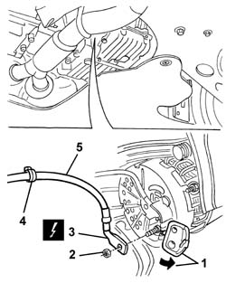

5530A82 LEAD BETWEEN STARTER MOTOR AND ALTERNATOR - R.R.
- Path
- Procedures > 55 ELECTRICAL EQUIPMENT > 5530 CURRENT GENERATOR > 5530A alternator and components > 5530A82 LEAD BETWEEN STARTER MOTOR AND ALTERNATOR - R.R.
- Kind
- repair procedure (removal / refitting; the operation number is the code)
- Applies to
- all engines; all production periods
- Interactive page
- https://sloeber94.github.io/elrnDB-a147/en/#/3025532
Applies to: all engines; all production periods
 Removing
Removing
 Refitting
Refitting1048A34 sleeve(s) from flow meter to air supply capacity case - r + r
1056B87 ignition/injection system control unit mount - r r
1056B17 throttle body intergral with dvl - r r
5530B26 lead between battery and starter motor - r+r
Raise the vehicle.
1. Working underneath the engine, open the cover for the alternator connection.
2. Undo the nut.
3. Remove the electrical connection.
 | Name | Connector |
|---|---|---|
3 | Alternator |
Lower the vehicle.
4. Working via the engine compartment, disconnect the cable retaining band.
5. Recover the cable.

Applies to: all engines; all production periods
Refitting
RemovingCheck that the cable between the starter motor and the alternator is not damaged and that the individual conductors are correctly secured to the connections.
If necessary, check the continuity.
Position the cable.
Connect the cable retaining band.
Raise the vehicle.
Position the electrical connection on the alternator and tighten the nut.
 | Fastening | Component | Ø | Value (daNm) |
|---|---|---|---|---|
- | Nut | ALTERNATOR LEAD | M8 | 1.1 |
Close the alternator connection cover.
Lower the vehicle.
5530B26 lead between battery and starter motor - r+r
1056B17 throttle body intergral with dvl - r r
1056B87 ignition/injection system control unit mount - r r
1048A34 sleeve(s) from flow meter to air supply capacity case - r + r